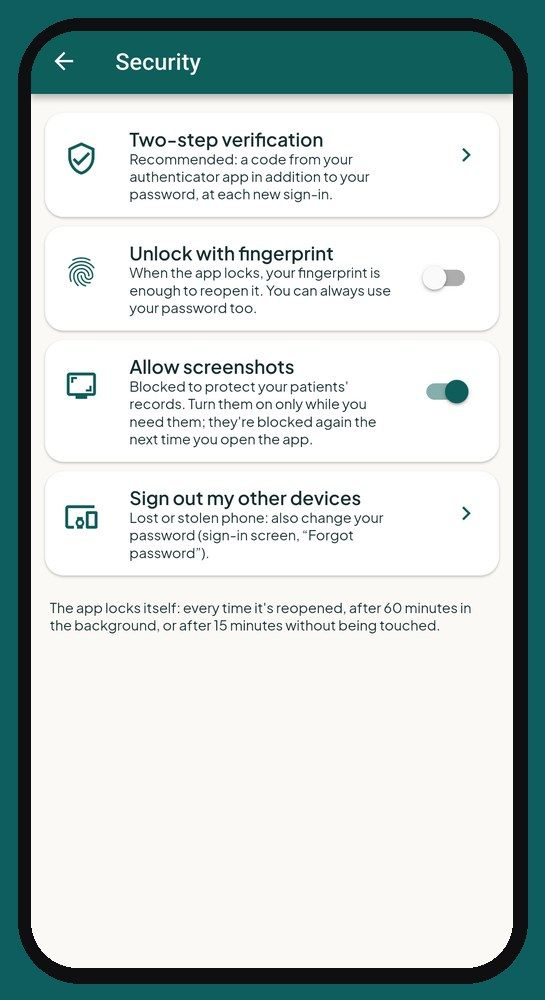
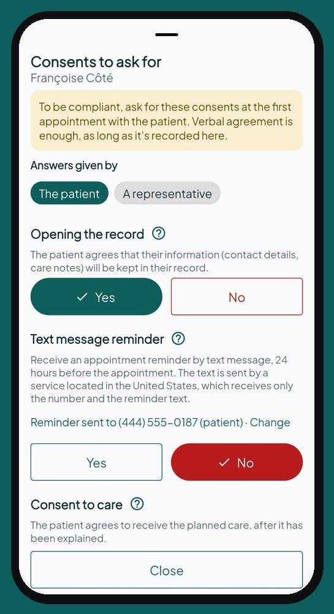
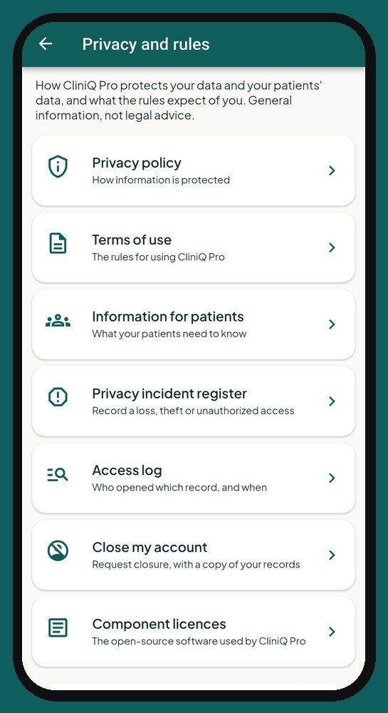

Secure patient records software with data stored in Canada
In private practice, you answer for your patients' information. CliniQ Pro is software and an app designed to help you meet Canadian privacy laws (PIPEDA, provincial health privacy acts and Quebec's Law 25), without slowing you down between patients.
Your data stays in Canada
Patient details, notes, appointments, invoices, photos and documents are hosted in Canada, in the Montréal region. They are encrypted in transit, and each professional sees only her own data: the server refuses any read of another account's data. Care photos are kept in a private space.
An app that locks itself
Password or fingerprint when reopening, lock after 15 minutes untouched, two-step verification by code, screenshots blocked by default on Android (you can allow them at any time, for example to ask for help: Settings → Security), and remote sign-out of your other devices if your phone is lost or stolen.

Notes nobody can change
A finalized note is signed and locked. Corrections are added as late entries, which keeps the original. Records are never erased: they are archived.
Consents, recorded and dated
Consent to care, opening the record, clinical photos, sharing with a third party and text reminders: each answer stays in the record with its date, whether it comes from the patient or a representative. A withdrawal of consent is recorded too.

Record keeping and privacy: the required registers, ready to use
The access log (who opened which record, and when) and the record of every copy handed to a patient are kept by the app and can be neither changed nor erased.

Clear about outside services
A clinical note is sent to an artificial intelligence service only if you use the note-writing assistant: what you give it is then processed by OpenAI (United States). Nothing in it may identify the patient: no name, no address, and no face or other recognizable detail in the photos. For travel calculations, only addresses are sent, with no name or care details. Text reminders never contain the patient's name or care. The full list is in our privacy policy.
Your requests and complaints
To see, correct or get a copy of your information, ask us to stop sharing it, or make a complaint about how your information is protected, write to rprp@cliniqpromobile.ca. Our privacy officer, Nancy Proulx, will answer you: acknowledgement within 2 business days, written answer within 30 days at most.
Are you the patient of a professional who uses CliniQ Pro? Your record belongs to them: please contact them first, and we will help them answer you. If our answer does not satisfy you, you can contact Quebec's Commission d'accès à l'information or, outside Quebec, the privacy commissioner of your province or the Office of the Privacy Commissioner of Canada.
Nurses, practical nurses and home care: privacy on the road
In home care, your records travel with you, in the car and at the patient's home. That is where the risks are greatest: a forgotten phone, a sheet left on the seat, a family member who answers the phone. CliniQ Pro is designed for that reality:
- No more paper notes in the car: you write and sign the note in the app, at the patient's home or between visits.
- A lost phone does not open your records: locks after 15 minutes, fingerprint or password, and remote sign-out of your other devices.
- Care photos go to a private space in the app, linked to the patient's record.
- When a family member handles the appointments, their consent as representative is recorded and dated in the file.
- Text reminders never include the patient's name or care, so nothing is revealed to whoever sees the phone.
Your professional college also requires complete records. CliniQ Pro helps you keep them, without replacing your judgment or legal advice.
Frequently asked questions
Does CliniQ Pro comply with privacy laws?
CliniQ Pro is designed to help you comply: data in Canada, access limited to your own records, notes that can't be changed, dated consents and an access log. Compliance also depends on your own practices: in private practice, you answer for your records. General information, not legal advice.
Where is my patients' data hosted?
In Canada, in the Montréal region, encrypted in transit and protected on the servers.
What do I do if I lose my phone?
Lock it remotely, change your password, sign out your other devices from Settings › Security, then record the incident in your own incident register (you keep it yourself). The app also locks itself.
Can I see who opened a patient's record?
Yes. The access log records every opening of a record, a visit or an assessment: date, time, patient and screen. It can be neither changed nor erased.
Launching January 1, 2027
See the app screen by screen, then reserve your spot: we'll write to you as soon as it opens.
See the appReserve your spotSee pricing
Sign up before January 1: 14-day free trial + $10 off your first payment.
A question? support@cliniqpromobile.ca
Features
- Scheduling and routes
- Patient records and notes
- Receipts and invoices
- Automatic mileage
- Expenses and accountant
- Sterilization log
- Questions and answers
- Pricing
- Clinic software
For your profession
- Nursing
- Foot care
- Wound and ostomy care
- Physiotherapy, occupational therapy
- Respiratory therapy
- Mental health
- Mobile dental care
- Denturism
- Medical aesthetics
- Massage therapy
- Speech therapy and audiology
- Social work
- Psychoeducation and special education
- Kinesiology
- Osteopathy
- Mobile blood draws
- Dietitians
Guides and comparisons
- 2026 software ranking
- Clinical documentation and mobile charting
- Clinic management software
- Practice management for solo practitioners
- Guide: choosing your software
- Jane App alternatives
- CliniQ Pro vs Jane
- App tour
- Import your patients
- Mileage deduction
- GST, HST and QST
- Who pays for what
- Money in your practice
- RPN, LPN and RN private practice
- FR-EN glossary of titles
- Getting started